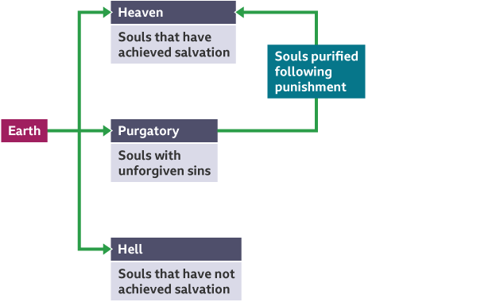

"Catholics believe that after death they will be judged based on how well they have followed God’s teachings."
The soul, may go to Heaven or Purgatory. Purgatory is where the souls with unforgiven sins will go, so that they can be purified and reach Heaven. Alternatively, souls that have not achieved salvation go to Hell.
if you are interest, and you want to get More info.
"Such Polite Road Signs" by cogdogblog is licensed under CC BY 2.0